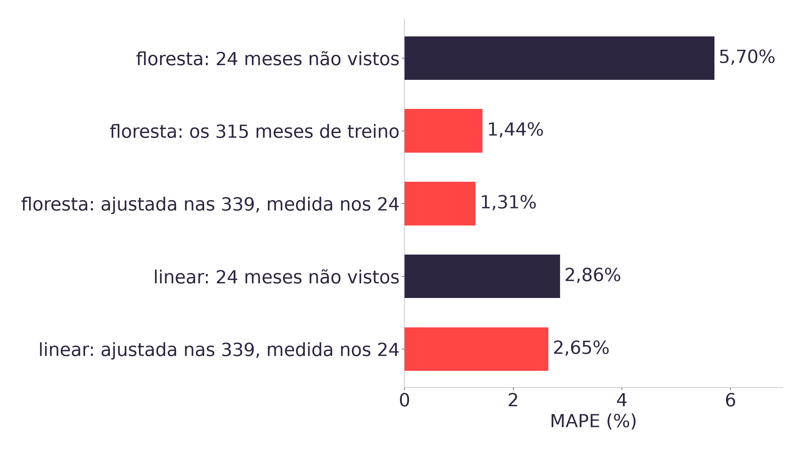
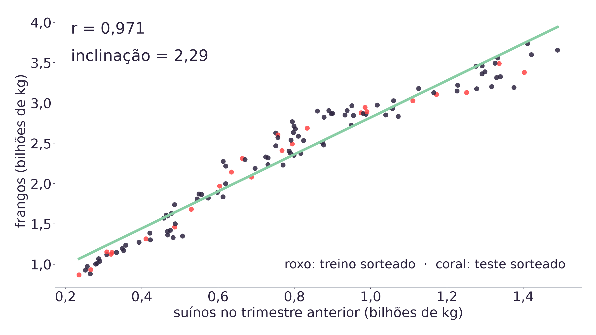
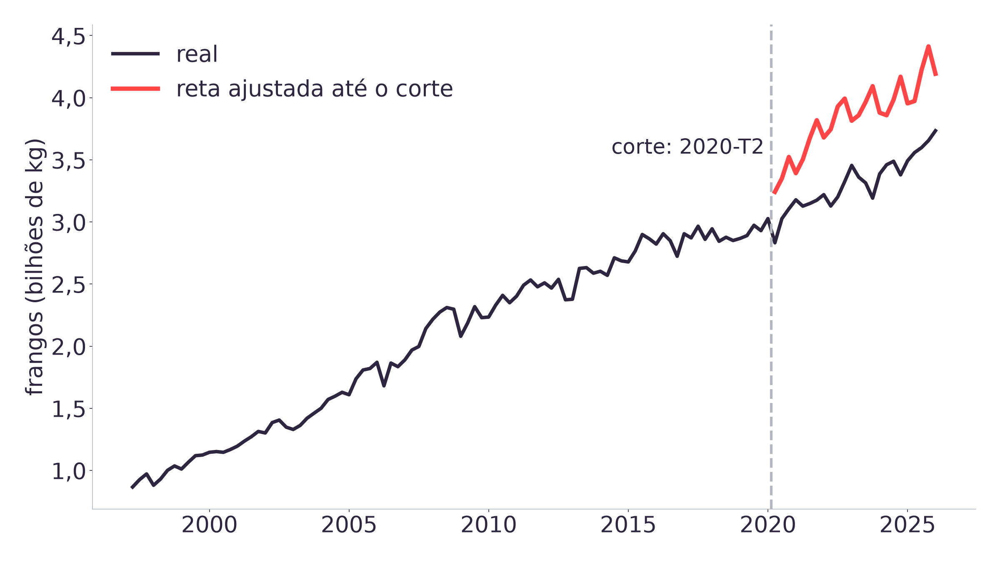
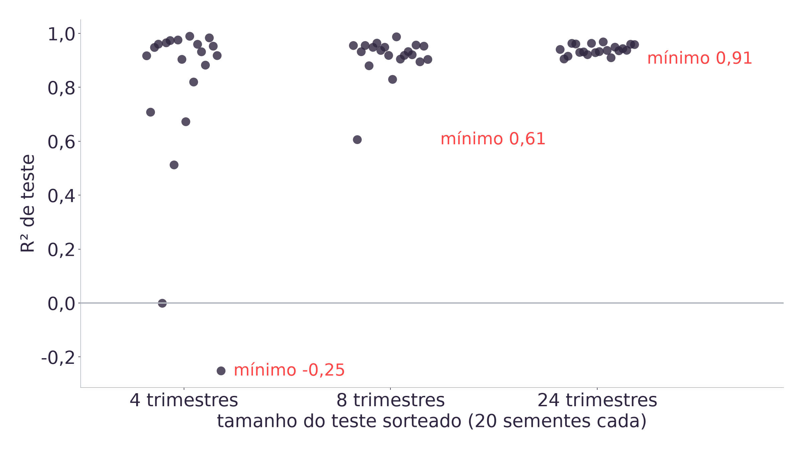

| Horário | Bloco |
|---|---|
| 08h00 · 10h00 | Autoestudo de Streamlit [13] e estudo prévio: material de apoio e autodiagnóstico do notebook [4] |
| 10h00 · 10h15 | Daily: o Pipeline da Aula 12 recarrega, e as duas dúvidas de cada dupla vão para o quadro |
| 10h15 · 10h30 | Resgate e diagnóstico, com voto individual |
| 10h30 · 10h45 | Revisão 1: variáveis, momento do dado e vazamento |
| 10h45 · 11h00 | Revisão 2: regressão linear simples e métricas |
| 11h00 · 11h15 | Revisão 3: matriz de confusão e limiar |
| 11h15 · 11h30 | Revisão 4: tipos de dado, ETL e ELT, recomendação |
| 11h30 · 11h45 | Prática com correção cruzada |
| 11h45 · 12h00 | Amarração: Prova 02/10 (peso 20) e ART.8 [12] |
- Voto individual, em silêncio, em um minuto. A mão levantada mostra a letra, de A a D, contando as alternativas de cima para baixo.
- Discussão em dupla, dois minutos, com alguém que votou diferente. Só acontece se o acerto ficar entre 35% e 70% da sala [5].
- Revoto individual, e o professor registra no quadro as duas contagens.
- Correção: o professor clica na alternativa e explica o erro que a alternativa mais votada revela.
Acima de 70% no primeiro voto, a explicação é curta e a sala segue. Abaixo de 35%, o conceito volta antes do revoto [5].
import joblib
pipe = joblib.load(
"app/modelo_aula12.joblib")
# reajustado nas 339 linhas.
# O número que acompanha o
# arquivo é o do objeto
# avaliado: MAPE de 2,86%.O arquivo carrega escalador e regressão linear num objeto só, reajustado sobre a base mensal inteira [14].
Na daily, cada dupla confirmou que ele recarrega sem erro. Hoje ele serve de referência: todos os exercícios usam essa base, esse modelo e os CSVs do SIDRA [1].
O app Streamlit sobre este arquivo é construído na Aula 14, em 06/10 [3].
A base mensal supõe que o mês t-1 já foi publicado quando se prevê o mês t. Coluna à direita da linha coral não existe no momento da previsão [4].
Voto individual. A dupla vai prever o abate de frangos de março de 2026. Qual coluna não pode entrar em X?
Voto individual. O modelo da Aula 12 tem MAE de 34,1 milhões de kg nos 24 meses de teste. O que esse número afirma?
Voto individual. No alvo binário da Aula 09, prever sempre alta acerta 83,3% dos 24 meses de teste. O que essa acurácia diz sobre as quedas?
Voto individual. Uma granja acaba de se cadastrar como cliente da LDC e ainda não comprou nenhuma formulação de ração. Qual estratégia consegue recomendar algo a ela?
| Coluna da base mensal | Papel | Existe no momento da previsão de t? |
|---|---|---|
| abate de frangos no mês t | y, o alvo | não: é o que se quer prever |
lag1, lag2, lag3, lag12 | X | sim: meses já publicados |
sen, cos, dias | X | sim: calendário, conhecido antes |
| as outras quatro séries em t-1 | X | sim: publicadas com o mês t-1 |
| as outras quatro séries em t | fora | não: saem junto com o alvo |
| número da linha, de 0 a 338 | fora | existe, e não generaliza |
O objetivo define y. O momento em que cada dado passa a existir define o que pode entrar em X, e isso vem antes de qualquer escolha de modelo [6].
| Outras quatro séries entram como | MAPE nos 24 meses de teste |
|---|---|
| valor do mês anterior, t-1, como no modelo da Aula 12 | 2,86% |
| valor do próprio mês t, publicado junto com o alvo | 2,43% |
O segundo número é melhor e não pode ser publicado. Em produção, no dia da previsão, essas quatro colunas estão vazias: o ganho de 0,43 ponto é exatamente o que o modelo perde no primeiro uso real [2][6].
É a definição de vazamento que a revisão usa: uma coluna registrada depois do momento da previsão. O teste não acusa nada, porque nele a coluna existe.
| Árvore de decisão com uma única feature, o número da linha | Resultado |
|---|---|
| MAPE nos 315 meses de treino | 0,00% |
| MAPE nos 24 meses de teste | 6,83% |
| Valores distintos previstos no teste | 1, os mesmos 1.101,6 milhões de kg |
A árvore memoriza cada linha do treino. As linhas de teste, de 315 a 338, são maiores que qualquer número visto, e caem todas na última folha [2].
Um identificador sequencial descreve a posição da linha no arquivo, e não o mês. O modelo precisa funcionar para casos novos, e caso novo tem número novo.

fit do escalador e do modelo só nos 315 meses de treino. Medida em 100
meses em vez de 24, a floresta ajustada em tudo continua em 1,31%: o tamanho do teste não
corrige um teste que o modelo já viu [2][7].
Voto, dupla, revoto. A floresta erra 5,70% nos 24 meses que não viu e 1,31% quando é ajustada nas 339 linhas e medida nos mesmos 24. Qual número estima o erro em 2026 e 2027?
fr = pd.read_csv("dados/abate_frangos.csv")
su = pd.read_csv("dados/abate_suinos.csv")
df = fr.merge(su, on="periodo",
suffixes=("_fr", "_su"))
df["suinos_lag1"] = df["valor_su"].shift(1)
df = df.dropna() # 116 linhas
X = df[["suinos_lag1"]] # 2D: DataFrame
y = df["valor_fr"] # 1D: Series
X_tr, X_te, y_tr, y_te = train_test_split(
X, y, test_size=0.2, random_state=42)
reta = LinearRegression().fit(X_tr, y_tr)
reta.score(X_te, y_te) # R² de teste- Dados: dois CSVs trimestrais do SIDRA [1].
- Qualidade: zero vazios, 1997-T2 a 2026-T1.
- X e y: X com colchete duplo, y com simples.
- Treino e teste: 92 e 24 trimestres.
- Treinamento:
fitsó no treino. - Avaliação e previsão: métrica no teste, depois
predict.

A dispersão confirma a forma linear antes do ajuste. A inclinação de 2,29 diz que cada quilo a mais de suínos no trimestre anterior acompanha 2,29 quilos a mais de frangos, na média do treino. É associação: as duas séries crescem juntas desde 1997 [2].
O sorteio serve quando a ordem não importa, como comparar granjas entre si. Para prever os próximos trimestres, o teste precisa estar depois do treino, e o sorteio mede interpolação em vez de previsão [8].

O RMSE vai de 179,2 para 552,9 milhões de kg. Um r alto no histórico não garante que a relação se mantenha no período seguinte, e só a divisão por data mostra isso [2].

random_state fixa o sorteio e torna o número reproduzível; ele não torna a
estimativa estável. Com 116 trimestres, 20% de teste dá 24 e o mínimo sobe para 0,91 [2].
| Métrica | Nos 24 meses de teste | O que afirma | O que não afirma |
|---|---|---|---|
| MAE | 34,1 milhões de kg | distância média, na unidade do alvo | direção, nem limite por mês: o pior erra 90,2 |
| Viés | -12,1 milhões de kg | erro médio com sinal: subestima em média | tamanho do erro: 7 dos 24 meses ficam acima |
| MAPE | 2,86% | erro relativo, sem unidade | peso igual entre meses de volume diferente |
| RMSE | 40,7 milhões de kg | pune erro grande, e nunca fica abaixo do MAE | média simples do erro |
| R² | 0,54 | fração da variância do teste explicada | acurácia: depende da variância do período |
| Acertos exatos | 0 de 24 | nada útil | acurácia não se aplica a alvo contínuo |
A média do alvo no teste é 1.181,9 milhões de kg, então o MAE equivale a 2,9% dela [2].
Voto, dupla, revoto. A reta de frangos sobre suínos do trimestre anterior tem R² de 0,95 no sorteio 80/20 e de -5,81 no corte por data. A LDC quer os próximos oito trimestres. Qual divisão responde à pergunta dela?
Alvo da Aula 09: alta quando o abate do mês supera o mesmo mês do ano anterior. Alta é a classe positiva [14].
Positivo ou negativo é o que o modelo previu. Verdadeiro ou falso diz se ele acertou.
Em dupla, dois minutos: classifiquem os seis meses da regressão logística ao lado.
| Mês | Real | Previsto | Caso |
|---|---|---|---|
| abr/24 | alta | alta | |
| mai/24 | queda | queda | |
| jun/24 | queda | alta | |
| fev/25 | alta | queda | |
| ago/25 | queda | alta | |
| out/25 | alta | queda |
Acurácia (TP+TN)/24 = 79,2% · precisão TP/(TP+FP) = 17/19 = 0,89 · revocação TP/(TP+FN) = 17/20 = 0,85 · F1 = 2PR/(P+R) = 0,87 [2]
| Classificador, 24 meses de teste | Acurácia | Precisão da alta | Revocação da alta | Precisão da queda | Revocação da queda |
|---|---|---|---|---|---|
| Baseline majoritária | 83,3% | 0,83 | 1,00 | não definida | 0,00 |
| Regressão logística | 79,2% | 0,89 | 0,85 | 0,40 | 0,50 |
| SVM linear | 83,3% | 0,90 | 0,90 | 0,50 | 0,50 |
São 20 meses de alta e 4 de queda. A baseline e o SVM linear empatam na acurácia, e só as métricas da classe minoritária mostram que o SVM encontra duas das quatro quedas [2][9].
A regressão logística encontra as mesmas duas quedas e fica com a menor acurácia das três, porque erra três meses de alta.
| Limiar | FP | FN | Precisão | Revocação |
|---|---|---|---|---|
| 0,4 | 3 | 1 | 0,86 | 0,95 |
| 0,5 | 2 | 3 | 0,89 | 0,85 |
| 0,6 | 2 | 7 | 0,87 | 0,65 |
| 0,7 | 0 | 9 | 1,00 | 0,55 |
FP: previu alta e veio queda, e a compra antecipada de milho fica parada. FN: previu queda e veio alta, e a compra sai tarde. Qual custa mais é decisão da LDC, declarada antes de escolher o limiar [9].
Voto, dupla, revoto. A LDC declara que comprar milho tarde, depois de uma alta não prevista, custa bem mais que estoque parado. Qual limiar da tabela anterior ela deveria preferir?
| Fonte do case | Estrutura | Onde fica | Por quê |
|---|---|---|---|
CSVs do SIDRA em dados/ | estruturado | data lake do case, cru | reprocessar sem baixar de novo |
| Base analítica de 339 linhas | estruturado | data warehouse | esquema fixo, consistente, consulta rápida pelo modelo |
| PDFs de boletins de mercado | não estruturado | data lake | formato variado, uso ainda indefinido |
| Imagens de satélite de lavoura | não estruturado | data lake | o original precisa ficar para reprocessar |
| Áudio de calls com cooperativas | não estruturado | data lake | transcrição e extração vêm depois |
ETL transforma antes de carregar, e serve ao warehouse de esquema fixo. ELT carrega cru e transforma quando a análise pedir, que é o que o acervo faz desde a Aula 04 [10][14].
| Estratégia | Dado de que depende | Granja nova | Formulação nova |
|---|---|---|---|
| Colaborativa usuário-usuário | histórico de compras de granjas parecidas | não | não |
| Colaborativa item-item | formulações compradas pelas mesmas granjas | não | não |
| Baseada em conteúdo | atributos da formulação: espécie, fase, proteína, energia | não | sim |
| Demográfica | atributos do cadastro: espécie, porte, região | sim | não |
| Popularidade | as formulações mais vendidas | sim | não |
Cold start de usuário pede dado que não seja histórico da própria granja. Cold start de item pede atributo do item, porque ninguém o comprou ainda [11].
Voto, dupla, revoto. CSVs do SIDRA, PDFs de boletins e imagens de satélite vão para o mesmo repositório da LDC sem transformação, e cada análise transforma quando precisa. O que é isso?
- Com y = abate de bovinos do trimestre, escolher uma única feature que exista antes do trimestre previsto, e escrever quando ela passa a existir.
- Conferir qualidade em
dados/: vazios, período coberto e unidade. - Escolher a divisão e a proporção, com justificativa para 116 trimestres.
- Treinar, reportar MAE, RMSE e R² na unidade certa e interpretar a inclinação.
- Prever 2026-T2 e dizer o que a métrica garante sobre esse número.
Seção 9 do notebook. Aos 11h40, a folha vai para a dupla vizinha.
| Critério | Atende quando |
|---|---|
| X, y e momento do dado | a feature existe antes do trimestre previsto, e a resposta diz quando |
| Qualidade | vazios, período e unidade conferidos no CSV, com o número |
| Divisão | a escolha entre sorteio e data é justificada pela pergunta da LDC |
fit | nada é ajustado com linhas de teste |
| Métricas | cada métrica vem com a unidade e com o que ela não afirma |
| Inclinação | lida como quilos de y por quilo de x, e como associação |
| Previsão | o número de 2026-T2 vem com a ressalva da métrica |
A dupla corretora marca atende ou não atende em cada linha e escreve uma frase sobre o critério que falhou. Nada de nota: a folha volta para a dupla autora.
| Tema | Onde revisar |
|---|---|
| Aprendizado supervisionado: X, y, momento do dado, vazamento, identificador | slides 11 a 13, material seção 2 |
| Treino e teste, e validade da estimativa de erro | slide 14, material seção 3 |
| Métricas de regressão: MAE, viés, MAPE, RMSE, R² | slide 22, material seção 4 |
| Dados estruturados e não estruturados, ETL e ELT, lake e warehouse | slide 31, material seção 8 |
| Sistemas de recomendação e cold start | slide 32, material seção 9 |
| Métrica adequada à tarefa, alvo desbalanceado | slides 22 e 27, material seção 6 |
| Fluxo completo da regressão linear simples | slides 17 a 21, material seção 5 |
| Matriz de confusão, métricas de classificação, custo e limiar | slides 25 a 28, material seção 7 |
- Hoje: refazer no notebook as questões do autodiagnóstico que falharam, sem olhar o deck.
- Quinta, 01/10: uma seção do material por tema, fechando cada uma pela autoverificação.
- Sexta, 02/10: Prova, peso 20 [12].
ART.8 Modelo Final, peso 4: o Pipeline da Aula 12, com o MAPE do
objeto avaliado e as versões declaradas, com review em 07/10 [12].
O app Streamlit, que alimenta a ART.9 Critérios de Publicação, peso 3, é construído na Aula 14, em 06/10 [3].
- IBGE. Pesquisa Trimestral do Abate de Animais e da produção de ovos e leite: tabelas 1092, 1093, 1094, 7524 e 1086 do SIDRA.
- Os números da aula, em
tools/tests/test_revisao_aula13.py. - A conversão do encontro em revisão, em
docs/adrs/ADR-016. - Material de apoio da Aula 13.
- Crouch, C.; Mazur, E. Peer Instruction: Ten years of experience and results. American Journal of Physics, 2001.
- Kaufman, S. et al. Leakage in data mining: formulation, detection, and avoidance. ACM TKDD, 2012.
- Hastie, T.; Tibshirani, R.; Friedman, J. The Elements of Statistical Learning, cap. 7. Springer, 2009.
- Hyndman, R.; Athanasopoulos, G. Forecasting: Principles and Practice, 3. ed., 2021.
- Saito, T.; Rehmsmeier, M. The precision-recall plot is more informative than the ROC plot on imbalanced datasets. PLoS ONE, 2015.
- Kimball, R.; Ross, M. The Data Warehouse Toolkit, 3. ed. Wiley, 2013.
- Schein, A. et al. Methods and metrics for cold-start recommendations. SIGIR, 2002.
PLANO_DE_ENSINO.md, seção 4: Prova 02/10 (20), ART.8 (4), ART.9 (3).- Autoestudos da Semana 09 em referencias/aula13.html.
- Aulas 04, 05, 08, 09, 10 e 12 do acervo.